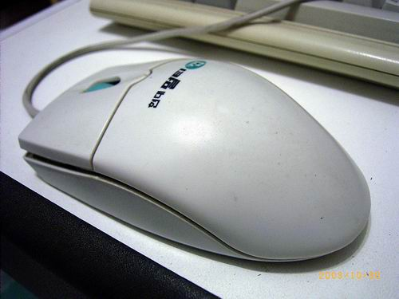
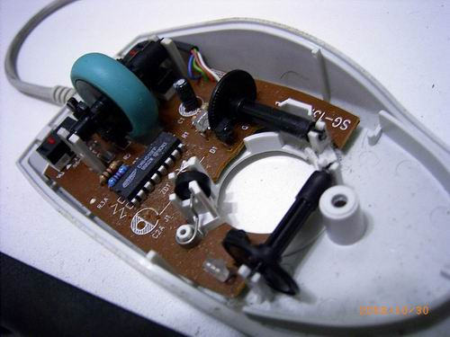
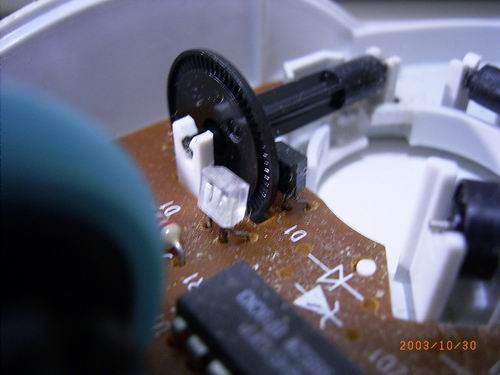
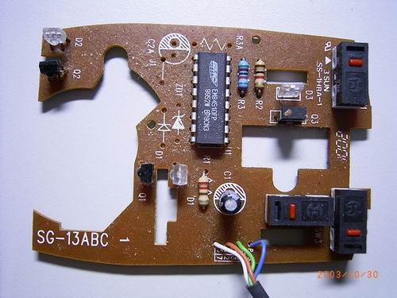

↑原本是一個好好的滑鼠。

↑就這麼把他拆了。

↑滑鼠移動時，滾球帶動黑色的輪軸，輪軸旁像摩天輪的構造就會
遮斷紅外線(黑白相對的紅外線發射器與接收器)。
由紅外線被遮斷的頻率就知道滑鼠移動的快慢了，
前後與左右各有一組這樣的偵測裝置。

↑滑鼠的主要電路。紅色是按鈕，透明體是發光二極體(紅外)，
黑色物是紅外線偵測器，藉光線被遮斷的速度可知滑鼠的移動情形。
中央有一的IC負責與電腦通訊。